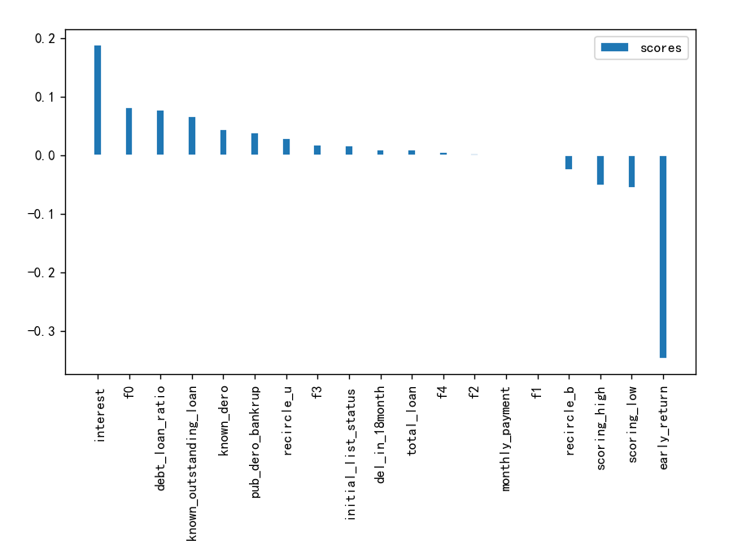
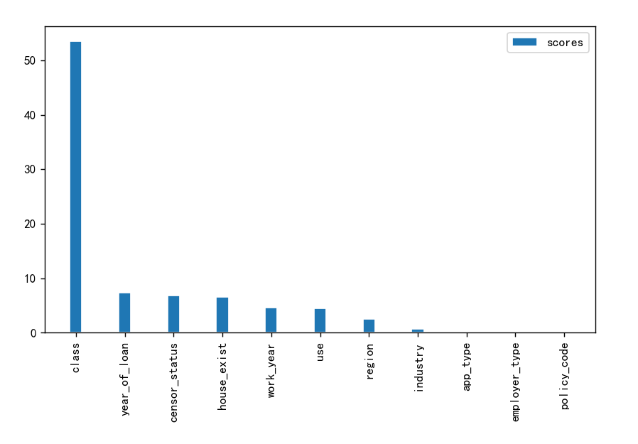
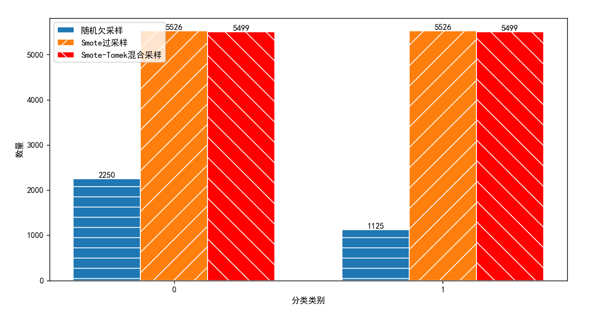

首先点击文件上传，将文件上传至服务器
其次点击原文件列表，可对原文件进行数据处理
接着点击已处理文件列表，可对文件进行预测，提供四种预测方式
最后点击结果文件列表，可对结果文件进行查看和下载
可以点击模型对比更清晰了解各个模型之间的差异
计算相关系数和卡方检验对应p值，得到如下数据
 根据相关性原理，选出十七个特征用于模型训练
采用随机欠采样、Smote采样、Smote-Tomek混合采样
三种算法在三种采样方式得到的训练数据下选出各个算法的最优模型
具体细节可在模型对比中查看